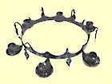

|
Startsidan
Böcker
Dramatik
Kultur-/barnprojekt
Margareta Lindberg |
|

|
|
Sveriges Televisions Luciaprogram 13 december 1993 spelades in i från Wira. Jag skrev manus, Anne Kulle regisserade, Hanna Kulle var lucia. Det var som sig bör mycket traditionell luciasång och musik, men också små spelscener med barn och smeder. Jarl Kulle var smed och berättade den gamla legenden om hur jungfru Lucias krona smiddes av en Wirasmed för länge, länge sedan. Kören sjöng den medeltida balladen om Lucias martyrskap. (Legend, balladtext och och melodi skrev jag hösten 1993 och de är alltså inte gamla på riktigt, vilket många har trott.) |
|
LEGENDEN BALLADEN |
|
|